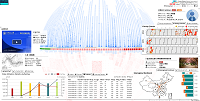
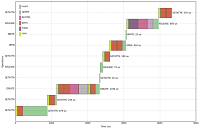
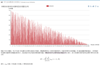
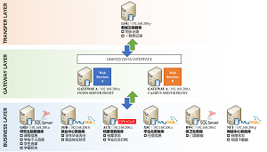
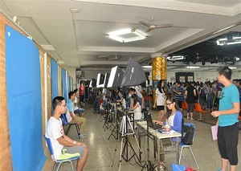

Huan He
hehuan@mail.xjtu.edu.cn
Department of Health Sciences Research,
Mayo Clinic
200 First Street SW, Rochester, MN 55905
NEWS
Aug. 2019: Mayo Clinic Orientation!
Jul. 2019: PhD defense passed! A paper is accepted in VAST'19!
Jun. 2019: PhD Dissertation submitted!
May 2019: An IJCAI demo has been accepted!
Apr. 2019: My first SCI paper has been accepted!
Feb. 2019: Two demos are accepted in WWW'19 demonstration track!
Dec. 2018: The paper of VUC is accepted in CompEd'19.
Oct. 2018: VIS18 is exciting! Impressive trip to Berlin.
Jul. 2018: VUSphere has been accepted in VAST 2018 Conference Track! So happy!
Mar. 2018: My FIRST first author international conference paper has been accepted! So excited!
I am a Research Fellow at Department of Health Sciences Research of Mayo Clinic. I received my Ph.D at the School of Electronic and Information Engineering, Xi'an Jiaotong University (XJTU) supervised by Prof. Qinghua Zheng. I obtained my master degree and bachelor degreen in software engineering from Xi'an Jiaotong University. My main research interests are applying web visualization and machine learning technologies in solving problems in real world, including bioinformatics, online learning behavior analysis, educational data mining, tax fraud detection, etc.
Work Experience
Publications
Ph.D Dissertation, July, 29th, 2019 at Xi'an Jiaotong Univeristy
Huan He, supervised by Prof. Qinghua Zheng.
PDF (Image Compressed) Slide (Image Compressed)
The high-quality images cause the original files too large, so only the compressed version are uploaded.
Proceedings of IEEE VIS 2019 (VAST 2019) (to appear), Vancouver, Canada, Oct 20-25, 2019
Huan He, Bo Dong, Qinghua Zheng, Dehai Di and Yating Lin.

The 28th International Joint Conference on Artificial Intelligence Demo Track (IJCAI 2019), August 10-16, 2019, Macao, China (Accepted)
Qinghua Zheng, Yating Lin, Huan He*, Jianfei Ruan, and Bo Dong.
IEEE Access, 2019 (Accepted)
Huan He, Qinghua Zheng, Dehai Di, and Bo Dong.
PDF Slides 10.1109/ACCESS.2019.2910589
2019 The Web Conference Demonstration Track (WWW 2019), San Francisco, CA USA, May 13-17, 2019
Huan He, Qinghua Zheng, and Bo Dong.
PDF VIDEO VIDEO (YouTube) DEMO 10.1145/3308558.3314140
2019 The Web Conference Demonstration Track (WWW 2019), San Francisco, CA USA, May 13-17, 2019
Hongchao Yu, Huan He*, Qinghua Zheng, and Bo Dong.
PDF VIDEO (YouTube) 10.1145/3308558.3314144

2019 ACM Global Computing Education Conference (CompEd 2019), Chengdu, China, May 17-19, 2019
Huan He, Bo Dong, Qinghua Zheng, and Guobin Li.
PDF DEMO 10.1145/3300115.3309514
Proceedings of IEEE VIS 2018 (VAST 2018) (to appear), Berlin, Germany, Oct 21-26, 2018
Huan He, Qinghua Zheng, and Bo Dong.
PDF VIDEO (Fast Forward) TALK VIDEO (VIMEO) Slides Slides(58.9MB)
Proceedings of IEEE 18th International Conference on Advanced Learning Technologies (ICALT), Mumbai, India, Jul 9-13, 2018, pp. 196-198
Huan He, Qinghua Zheng, Bo Dong and Hongchao Yu.
PDF Slides 10.1109/ICALT.2018.00053
Proceedings of The 12th International Conference on E-learning and Games (Edutainment), Xi'an, China, Jun 28-30, 2018, pp. 389-397
Huan He, Qinghua Zheng, Rui Li and Bo Dong.
PDF Slides 10.1007/978-3-030-23712-7_54

Sciencepaper Online, May 17, 2017
Huan He, Qinghua Zheng, and Bo Dong.
PDF 201705-1114
Proceedings of 2015 IEEE Trustcom/BigDataSE/ISPA, Helsinki, 2015, pp. 136-142
Ni Xue, Huan He*, Jun Liu, Qinghua Zheng, Tian Ma, Jianfei Ruan, and Bo Dong.
PDF DEMO Slides 10.1109/Trustcom.2015.572
Proceedings of IEEE 11th International Conference on e-Business Engineering (ICEBE), Guangzhou, China, 2014, pp. 258-263
Qinghua Zheng, Huan He, Tian Ma, Ni Xue, Bing Li, Bo Dong
PDF 10.1109/ICEBE.2014.51
The Chinese Journal of ICT in Education (中国教育信息化) 2012 (3) : 57-60
Honglei Liu, Yiming Li, Huan He, Bo Han
PDF 1673-8454（2012）03-0057-04
Experimental Technology and Management (实验技术与管理) 2011 (5) :229-231
Huan He, Bo Han, Yiming Li, Dehai Di
PDF 1002-4956(2011)05-0229-03
Experimental Technology and Management (实验技术与管理) 2011 (5) :216-218
Yiming Li, Huan He, Lei Han, Jie Yang, Bo Han
PDF 1002-4956(2011)05-0216-03
Academic & Social Works
- The International Review of Research in Open and Distributed Learning
- AAAI Conference on Artificial Intelligence Demonstrations Program 2019
- Director of Art and UI, BMY BBS of Xi'an Jiaotong Univeristy (2007 - 2012).
Projects

School of e-Learning, Xi'an Jiaotong University, Xi'an, Shaanxi, China
A tool embbeded in learning management system. In this tool, I proposed a calendar-like model to encode the temporal attributes of interactions in the long-term learning process. Based on a trained simplified CNN model with learning process data, this tool can predict students' grade point based on their engagement history. We believe that it can help students understand their learning process of multiple courses in a semester, and support instructors to analyze the temporal patterns.
DEMO

School of e-Learning, Xi'an Jiaotong University, Xi'an, Shaanxi, China
To understand the video utilization patterns and the enrollment across the country, I designed and implemented this visual analytic system called VUSphere. It has three linked views: an overview with a spherical layout to show the overall video utilization, a detailed statistics view with 4 panels with 9 tabs, and a comparison view to examine different elements.

WonderTek Inc., Shanghai, China
To facilitate the efficiency and scalability of small files reading and writing, we designed and implemented a basic file system based on FUSE and MongoDB with refer to prior work in our team. With the characteristics of the MongoDB database, I designed a algorithm and a data structure for mapping from the tree directory structure to the key-value structure and implemented the operations specified by FUSE, such as getattr, create, write, flush, etc. In addition, I visualized the detailed r/w operation sequences to improve the performance.

MOOC2U.com, Open Edutaiment Inc., Beijing, China
An educational data analysis system for MOOC China platform. I designed the architecture of this system and developed most of the modules, including behavior capturer, log collector, analyzer based on Apache Spark, and the visualization. We integrated several common used charts, such as bar chart, map, heatmap, etc., to show how students interacts with this platform. The statistical results of learning log are visualized to gain insights into the learning patterns and trends in MOOC China platform.

Network and Information Center, Xi'an Jiaotong University, Xi'an, Shaanxi, China
In order to connnect isolated information islands between information systems of many departments, such as graduate school, department of archives, finance office, employment center etc., I designed and developed this system based on Serice-Oriented-Architecture (SOA) approach and technologies. Data in each isolated system can be synced without modification to existing systems.

Network and Information Center, Xi'an Jiaotong University, Xi'an, Shaanxi, China
During the freshmen enrollment of each year, taking a photo for ID was a very time-consuming part, especially when there are about 4,000 - 5,000 students enrolled in two days. It takes about 2-3 minutes for each part-time photographer to take a photo that meets standard. As a result, students had to wait in a long queue. To address this issue, I developed a semi-automatic camera system that integrates campus card service, standard PC camera and student information system based on OpenCV and SOA technologies. An intern student can take a good photo within 15 seconds with just 3 mouse clicks, which greatly improves the efficiency and significantly shorten the queue length.
Network and Information Center, Xi'an Jiaotong University, Xi'an, Shaanxi, China
At that time, the process of paying various fees required manual services (e.g., network fee, entry fee, etc.), which were not only time-consuming but also cumbersome. I developed a desktop software and a web-based application to help students self-pay on the terminals. The detailed design and are included in my master thesis.
MASTER THESIS PDF
Patents
ZL201410328449.0
一种面向MapReduce框架的地理归属信息查询方法
Weizhan Zhang, Huan He, Ni Xue, Qinghua Zheng, Bo Dong
ZL201310298976.7
一种基于HBase的构建和检索增量索引的方法
Qinghua Zheng, Bo Dong, Huan He, Kailei Song, Haipeng Xu, Tian Ma, Yaxing Chen
ZL201410840805.7
一种基于DOM的网页关键内容抽取方法
Bo Dong, Ni Xue, Huan He, Qinghua Zheng, Tian Ma
ZL201410658492.3
一种基于HBase的税收统计报表存储与计算的方法
Qinghua Zheng, Tian Ma, Bing Li, Huan He, Jianfei Ruan, Zhenchao Zhang, Jiansheng Shi, Peiyong Wang, Yunhui Qian
ZL201310272890.7
基于重叠点识别的网络重叠社团检测方法
Jun Liu, Haipeng Xu, Bo Dong, Qinghua Zheng, Tian Ma, Huan He, Bing Li
ZL201410344242.2
基于主从架构的MapReduce任务跨数据中心调度系统及方法
Weizhan Zhang, Jianfei Ruan, Qinghua Zheng, Bo Dong, Hanning Zhang, Huan He
Tools
A visualization tool for understanding the migration of virtual machines among the physical machines. DEMO
Generating a year calendar of A4-size page with the deadlines of conference in one year I am concerned. GitHub
Awards & Scholarship
Xi'an Jiaotong University, Xi'an, Shaanxi, China
Xi'an, Shaanxi, China
Xi'an, Shaanxi, China
Beijing, China
Xi'an, Shaanxi, China